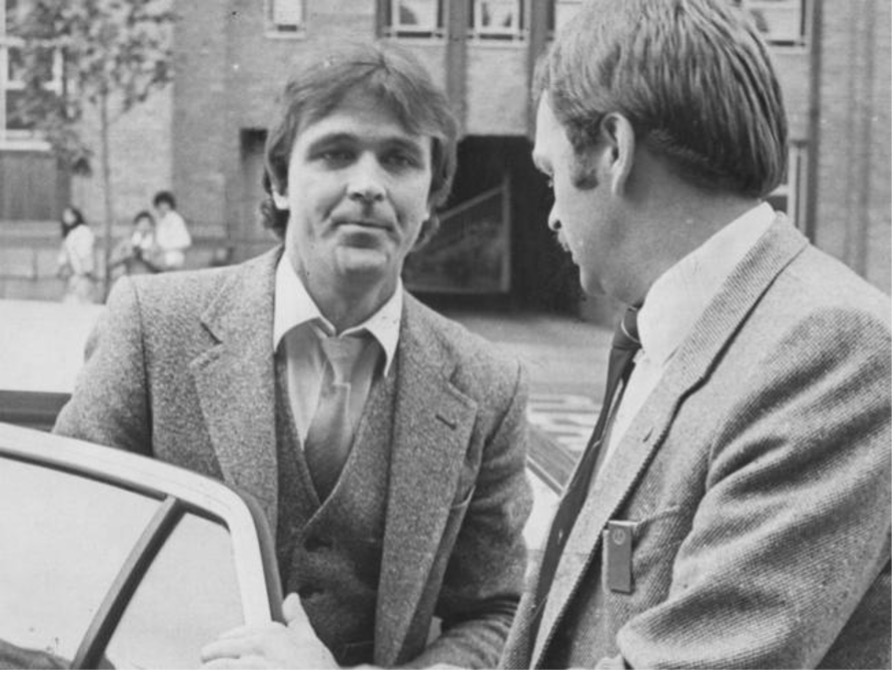

Christopher Dale Flannery
Christopher Dale Flannery, nicknamed “Mr Rent-a-Kill” (born 1948- disappeared on the 9th of May 1985) is alleged to have been an Australian contract killer. Flannery began his life of crime at a young age. He was acquitted of multiple murder charges and worked as a bodyguard for Sydney crime figure George Freeman.
Flannery’s life was marked by violence, as he was involved in gang wars, murder attempts, and was ultimately presumed dead after disappearing in 1985. The New South Wales State Coroner concluded that Flannery was most likely murdered on or around that date, with former detective Roger Rogerson possibly holding the key to solving the case. Flannery was born in Brunswick, Victoria. He left school at the age of fourteen and received his first criminal conviction later that year.
At 17, he was convicted of housebreaking, auto theft, assault against police, carrying firearms, and sexual assault, and was sentenced to seven years imprisonment. On his release from prison, Flannery became a bouncer at Mickey’s Disco, a night club in St Kilda, but was quickly bored by the work and moved into contract killing, hence the moniker “Mr Rent-a-Kill”.
On the 6th of June 1984, Flannery is alleged to have been the gunman in the attempted murder of a Sydney Drug Squad detective, Michael Drury. Drury had been the undercover agent involved in a police drug operation which resulted in charges being laid against Flannery’s friend, Alan Williams. Williams later testified that Flannery had attempted to bribe Drury through Rogerson to get the charges against Williams dismissed.
When Drury rejected repeated attempts at bribery, Williams claims, he agreed to pay Flannery and Rogerson $50,000 each to murder Drury. As Flannery and his wife walked towards their house on the 27th of January 1985, the residence was sprayed with thirty shots from an Armalite rifle. No one was seriously injured, though Flannery was shot through the hand as he pushed his wife’s head down and he suffered some other minor abrasions. Rogerson was seen in the area in the days after the shooting and was interviewed by police. He claimed he was just curious to see what kind of damage such a gun could do. He was released without charge. Drury was also interviewed, but was not considered a serious suspect.
On the 23rd of April 1985, Flannery was allegedly sent to murder Tony “Spaghetti” Eustace. Eustace was found by two schoolchildren who were returning home from sports training at about 7pm. He had been shot six times in the back outside the Airport Hilton in North Arncliffe and was lying beside his gold Mercedes, bleeding profusely. He was rushed to hospital. Police attempted to speak to him, but Eustace told them to “fuck off” and died a short time later.
By the time of his disappearance and presumed death, police stated that they believed Flannery to have been responsible for up to a dozen murders. Not long after the attack on his family, Flannery moved into an inner Sydney apartment. On the 9th of May 1985, Flannery received a phone call from Freeman asking for a meeting. Flannery, in leaving for the rendezvous, was unable to start his car. Flannery contacted Freeman who told him to catch a taxi. Flannery did so; after exiting the Connaught, where he lived, onto Liverpool Street, he was never seen again.
It has been claimed by Smith that police may have been responsible for Flannery’s disappearance, as Smith noticed him enter a police car with officers he knew on the 9th of May. The officers had allegedly offered to take Flannery to meet with Freeman.
On the 6th of June 1997, New South Wales State Coroner Greg Glass handed down the finding that Flannery was murdered most probably on or about the 9th of May 1985. He also found that the key to solving the murder lay with Rogerson. On the 22nd of February 2004, Rogerson told the Seven Network Sunday programme, “Flannery was a complete pest. The guys up here in Sydney tried to settle him down. They tried to look after him as best they could, but he was, I believe, out of control. Maybe it was the Melbourne instinct coming out of him. He didn’t want to do as he was told, he was out of control, and having overstepped that line, well, I suppose they said he had to go but I can assure you I had nothing to do with it.” Flannery left a wife and two children.